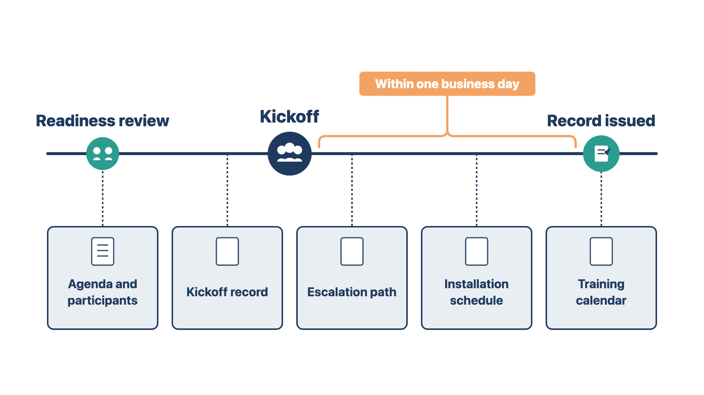
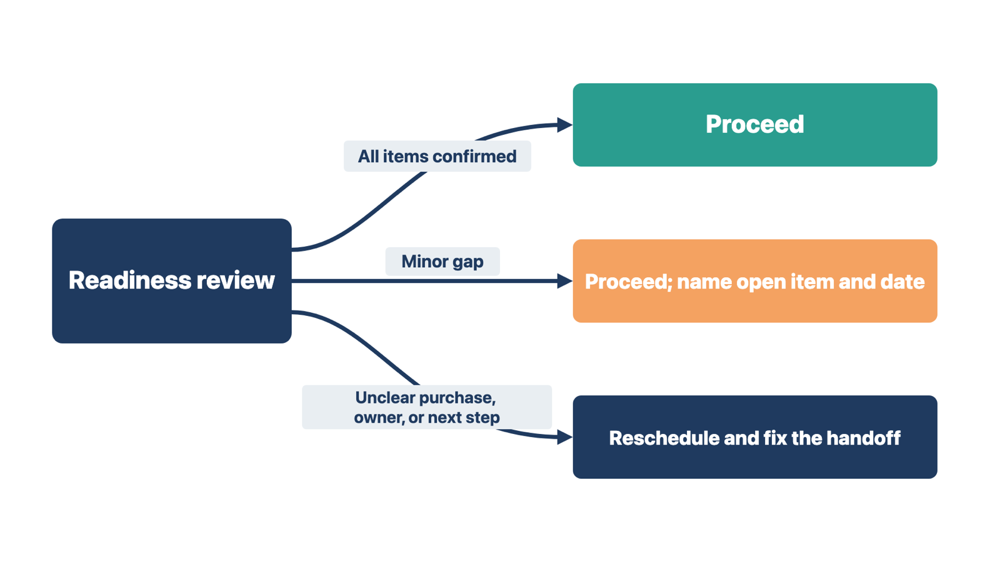
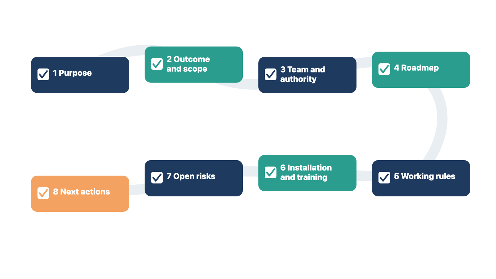

A kickoff that shows your team disagreeing about scope or dates loses the client's trust in the first hour. Hold a short internal readiness review first. This is a meeting of your own team only.
The kickoff is not a discovery workshop, a product demonstration, or a ceremony. A useful kickoff ends with shared facts, named authority, first decisions, and dates the team understands. You cannot reach that end if your own team is not ready.

If a gap remains, decide whether the kickoff can go ahead honestly. A minor gap can stay open if you name it and give it a decision date. A major gap is different. If the team cannot explain what was purchased, who owns the project, or what happens next, reschedule and fix the handoff.
Rule: If your team cannot say what was bought, who owns the project, or what happens next, reschedule the kickoff.
Compare two cases. At one clinic, the team is ready except for the date of one interface test. The team goes ahead and names that date as an open item. At another clinic, sales and the order disagree about which locations were bought, and no project owner is named. That team reschedules. The shared rule: you can carry a small open item into the room, but not an unknown purchase or owner.

The kickoff makes decisions. A crowded meeting uses up time and makes decisions harder. Invite people for the authority the meeting needs, not to show a large team.
Invite:
A workstream is a group of related work, such as data conversion, training, or interfaces. You built the workstreams in Module 2.
Do not invite every future helper. Share the full list of resources in the project materials. Bring specialists into the meetings where their work is active.
Ask the client project owner about accessibility, language, time-zone, shift, or scheduling needs. These may affect the meeting or later training. A standard flow should create consistency. It should not block a needed accommodation.
Rule: Invite people for the decisions the kickoff must make.
Compare two cases. A practice manager wants all 22 staff at the kickoff. You invite the four decision-makers and send everyone the resource map. At a different clinic, a billing question needs a decision at kickoff, so you invite the billing manager, even though billing work starts later. The shared rule: the decision decides the invitation.
Check yourself
A fixed order lets you keep your attention on people and decisions, not on what comes next. This book's method is to memorize eight sections and fill in the blanks for each client.
Use this order:
Your words can sound natural. The order stays the same.

State the purpose, the planned length, and the decisions the meeting must reach. For example:
"Today we will confirm the outcome and scope. We will meet the people who own each workstream. We will review the path to go-live. We will leave with the first working dates and actions."
Then ask one question: does anyone with approval authority have to leave early? If so, move their decisions to the start. Handle them while that person is present.
Rule: Handle an early leaver's decisions while they are still in the room.
Check yourself
If the client does not confirm scope at the start, every later date and design rests on a guess. This section also gives staff a reason for the change.
Begin with why the client bought the system. Then show the initial scope summary from Module 1: what is in scope, out of scope, and to be confirmed. Ask the sponsor or project owner to correct it.
Do not read the order line by line or restart the sales process. Your goal is to confirm the team's working understanding. Sort what you hear into two kinds:
Then ask the sponsor to state, in one or two sentences staff will hear, why the clinic is changing and what will be better. The clinic's leaders own this message. You help them repeat it. Staff who know the reason for a change are more likely to support it.
Useful questions include:
Record the answers in the project record.
Rule: A new request goes to the change process; a misunderstanding of the sale goes to the commercial owner.
Compare two cases. A sponsor asks to add text-message reminders that were never in the order. That is a new request, so it goes to the change process. A different sponsor says, "We were told the portal includes online bill pay," but the order lists the portal without it. That is a misunderstanding of the sale, so the commercial owner resolves it. The shared rule: you sort the item first, then send it to its owner. You do not settle it in the kickoff.
Check yourself
If people do not know who decides, decisions stall or the wrong person makes them. This section names each owner and a route around the usual chain for urgent concerns.
Introduce yourself and the contact for each active team. Explain what each person owns in plain words. Ask the client to confirm its sponsor, project owner, workflow decision-makers, data owner, training coordinator, and required approval roles.
Make the route clear:
Escalation means raising a concern to someone with more authority because it cannot wait or the usual route cannot settle it.
Do not say that every decision "comes through" one person if that blocks access to safety, compliance, or security authorities. Coordination needs a clear center. Escalation needs a clear bypass: a direct route to those authorities when a concern is urgent or needs independence.
Rule: Name one center for coordination and a direct bypass for urgent safety, privacy, and security concerns.